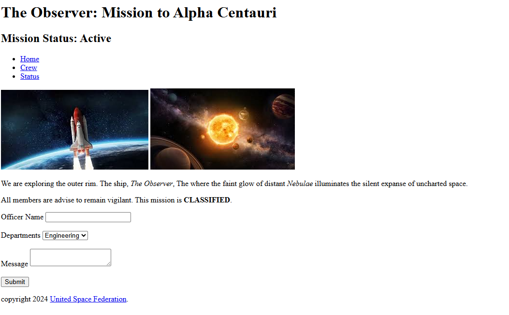
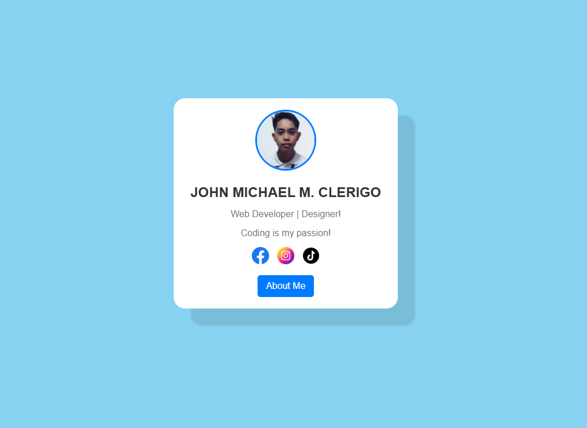
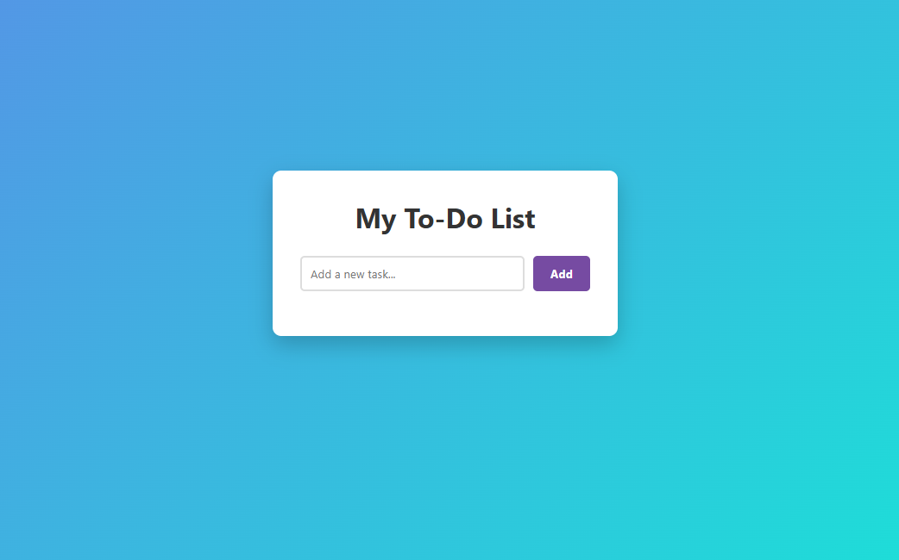
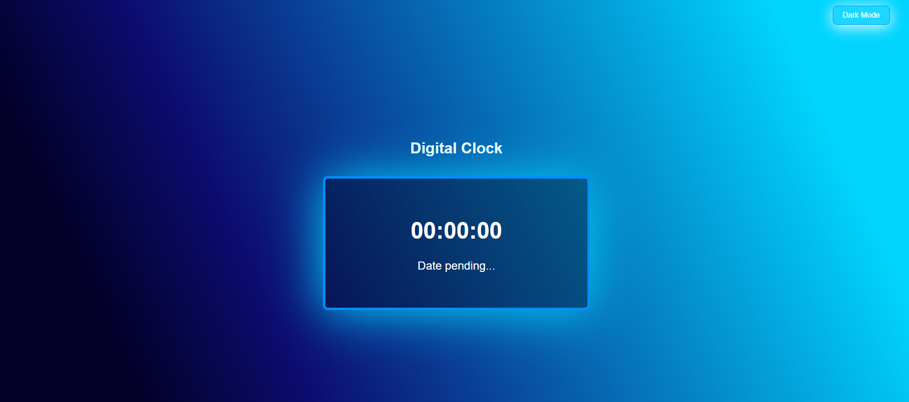

My Projects
Lab 1: Observer
The first lab project is a simple webpage that I created using HTML. The webpage is a simple project that used the basic tags of HTML. It includes a header, a navigation bar, a main content area, and a footer.

Lab 2: Profile Card
The second lab project is a simple webpage that I created using HTML and CSS. The webpage is a simple project that contain all my information with my profile picture and accounts. It includes a header, a navigation bar, a main content area, and a footer.

Lab 3: To-Do List
The third lab project is a simple webpage that I created using HTML, CSS, and JavaScript. The webpage is a simple project that allows users to add, remove, and mark tasks as complete. It includes a text box, a button, and a list to do.

Lab 4: Digital Clock
The fourth lab project is a simple webpage that I created using HTML, CSS, and JavaScript. The webpage is a simple project that displays the current time and updates every second. It includes a digital clock display and a background image.
